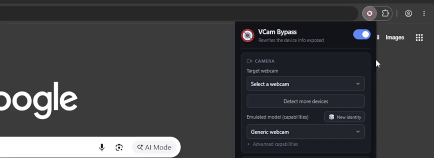
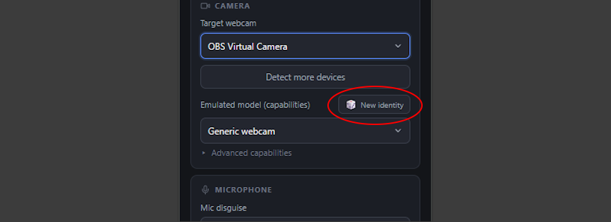
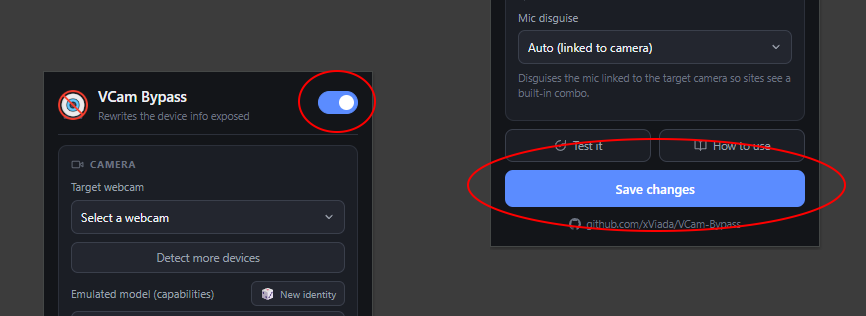
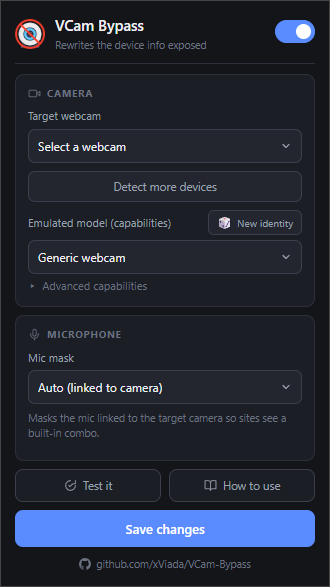

Without
OBS Virtual Camera
Virtual camera
2 controls
- Resolution
- Frame rate
Chrome extension
A Chrome extension that makes a virtual camera, such as OBS Virtual Camera, look like a normal physical webcam to any website.
Without
Virtual camera
2 controls
With VCam Bypass
Physical webcam
12 controls



Logitech C920, C922, BRIO, Microsoft LifeCam, etc.
The microphone appears as the webcam's built-in mic.
The site only sees the emulated device.
A consistent name, deviceId, and groupId.
Shows exactly what a website sees.
Everything happens in the browser, without touching the system or the video.

chrome://extensionsChoose the extracted folder, not the zip file. Reload any page where you use the camera so the extension can run.